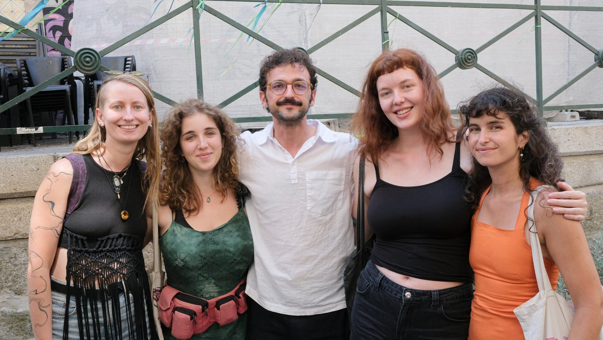
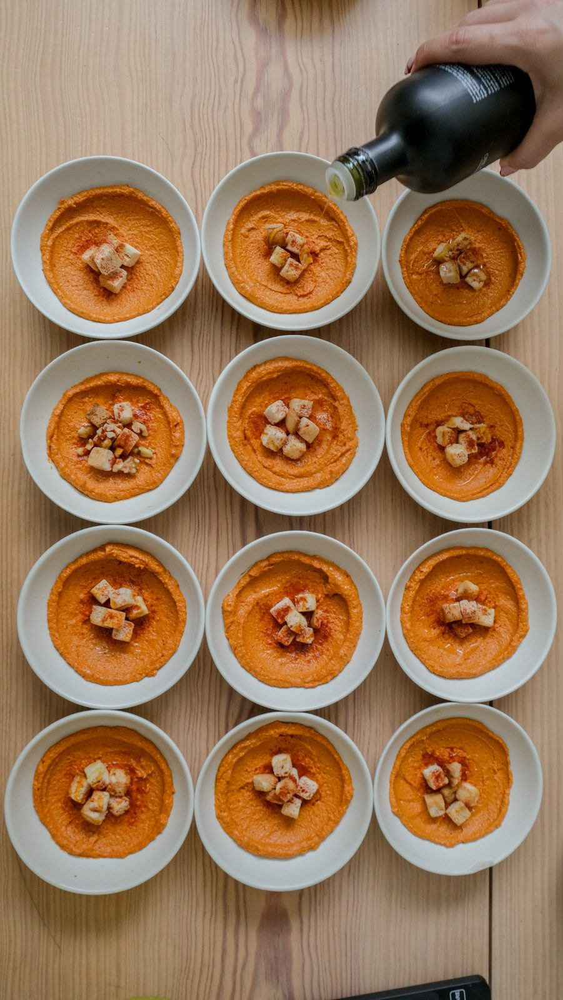
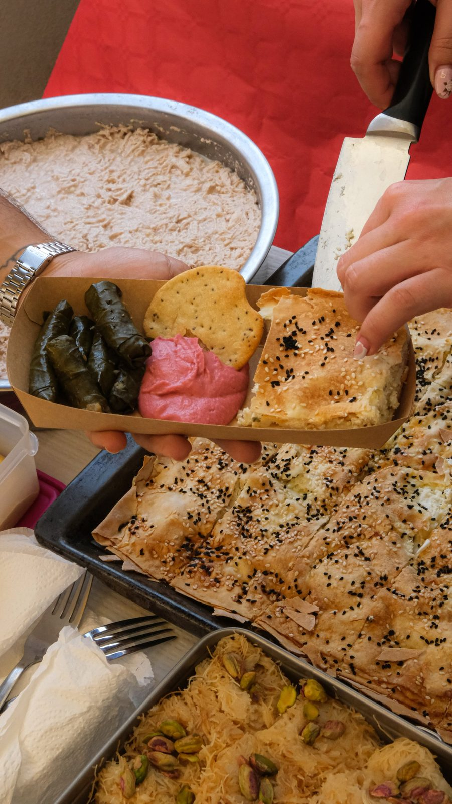
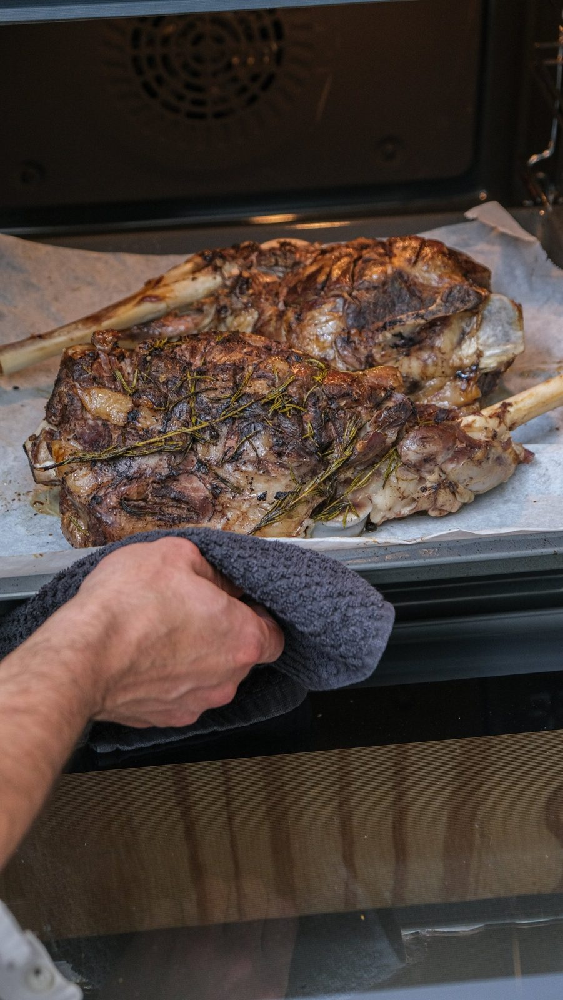
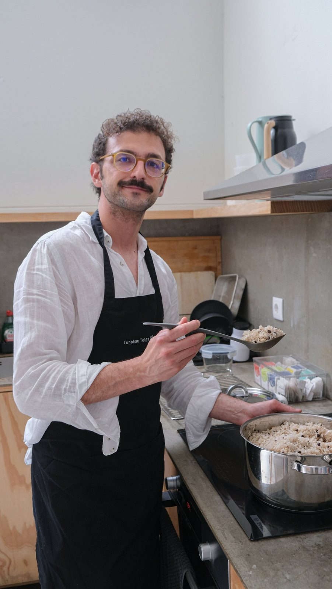
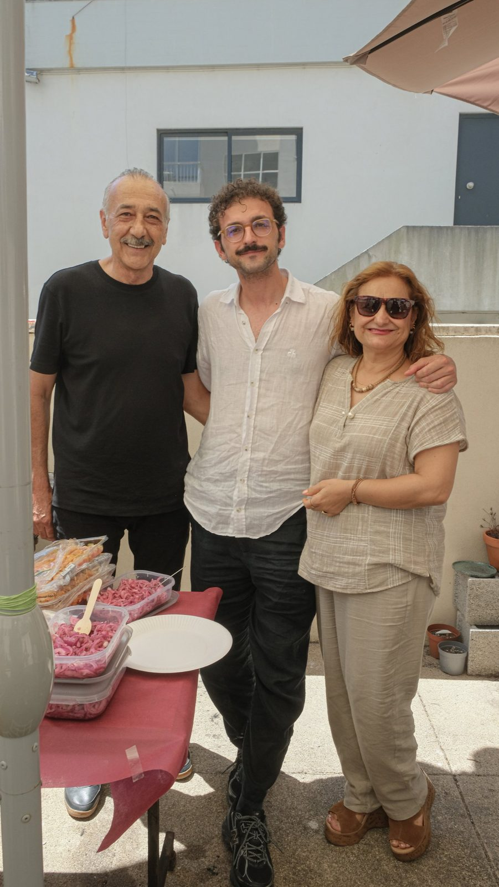

Pop-up dinners
A new spot each time
One or two dinners a month in bars, clubs and gardens around Porto. A set menu, shared plates, long tables.
Jantares em sítios diferentes do Porto.
Turkish home cooking · Porto
Real Turkish home food, popping up around Porto. Dinners, open days and long Sunday breakfasts, cooked by Tuna from Mersin.
Cozinha turca de casa, em pop-up pelo Porto.

Próximas mesas
At my home, Av. Meneres, Matosinhos
Lahmacun all day, meze, mercimek and çay. Come in, stay at the door, or take it to the beach. At 17:00 we celebrate 29 Ekim early, so wear red and white.
Casa aberta. Sem reserva, é só aparecer.
At my home, Matosinhos · 4 seats · Free
A real Turkish breakfast for four people who have never had one. Menemen, çılbır, pişi, homemade simit, serpme and endless çay.
Um verdadeiro pequeno-almoço turco, para quatro.
Três formas de vir à mesa

Pop-up dinners
One or two dinners a month in bars, clubs and gardens around Porto. A set menu, shared plates, long tables.
Jantares em sítios diferentes do Porto.

Open House
My home in Matosinhos, open from noon. Eat inside, grab a plate at the door, or carry it to the beach three minutes away.
A minha casa, aberta o dia todo.
Kahvaltı Club
A few guests at my table for a slow breakfast that runs three hours. Kahvaltı means "before coffee", and we read your cup at the end.
Pequeno-almoço turco, ao domingo.
What I cook
Only the real flavours of Turkish cooking, from Mersin to Istanbul. The menu changes every time. These keep coming back.
Só os sabores verdadeiros da cozinha turca.



Who cooks
Born in Mersin, on Turkey's Mediterranean coast, one of the country's richest food cities. Almost eight years in Istanbul, and Porto has been home for three.
Nasci em Mersin. Vivi quase 8 anos em Istambul e há 3 que o Porto é casa.
By day I work in tech with B2B software companies. My love for cooking goes back to university, and Turco Porto is where it finally gets a table.
İznik × Azulejo
Istanbul and Porto share a lot: tiles, bridges, a river, and tables where nobody eats in a hurry.
Istambul e o Porto: azulejos, pontes, um rio e mesas sem pressa.
Private dinners & catering
I cook for private dinners, celebrations and team lunches around Porto. Tell me the date and the people, and I will come back with a menu.
Jantares privados, festas e catering. Diga-me a data e quantas pessoas.